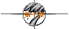
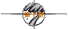

|
(半夜至尊宝溜出洞房去找紫霞，却被八戒和沙僧截住，至尊
宝只好陪他们去救唐僧。)
唐僧：我不会走的。
八戒：啊？为什么？
唐僧：我们师徒四人这次取西经可以说是困难重重，原因是我们不
同心协力，所以被妖魔得逞。既然是这样，我在这个监狱里
跟在外面有什么分别呢？外面对我来说只不过是个大一点的
监狱罢了。你们先出去，我有话要对大师兄说。
八戒：师傅！
唐僧：八戒，你又不听话！
八戒：不是啊师傅！我在外面帮你把风。沙僧，跟我来！(两人离去)
唐僧：悟空，你进来吧！(打开牢门让至尊宝进来)
至尊宝：坦白说，我不是你徒弟，我更不想是你的徒弟！大师你慈悲
为怀，你就放了我一马吧，好吗？
唐僧：悟空，你知不知道什么是铛铛铛铛铛铛？
至尊宝：什么铛铛铛铛？
唐僧：铛得铛铛铛铛铛，就是(唱道)
On--ly you--！ 能伴我去西经；
On--ly you--！ 能杀妖和除魔；
Only you 能保护我，叫螃蟹和蚌精无法吃我；
你本领最大，就是 Only you--！
至尊宝：哎……
唐僧：On--ly you－－！ 别怪师傅嘀咕；
戴上金箍儿，别怕死别颤抖；
背黑锅我来，送死你去，拼全力为众生！
牺牲也值得，喃呒阿弥陀佛！
至尊宝：我真的不行啊，我跟你说……
唐僧：On－On--！
至尊宝：On你妈个头啊！你有完没完啊！(一拳将唐僧打倒)我已经跟
你说过我不行了，你还要On-On-！On-On-！完全不理人家受
得了受不了，你再On我一刀捅死你！
唐僧：悟空，你尽管捅死我吧，生又何哀，死又何苦，等你明白了
舍生取义，你自然会回来跟我唱这首歌的！喃呒阿弥陀佛、
喃呒阿弥陀佛、喃呒阿弥陀佛……
(至尊宝掩耳逃走。)
(至尊宝去找紫霞却发现她身受重伤，正要带她逃走，又撞见
在后院等他的铁扇公主。)
*铁扇公主：你失约原来真是和这个贱人在一起！啊？她怎么啦？
*
至尊宝：为了你我已经把她杀了！你看我捅了她多少刀？看了都开心，
* 对不对？
*铁扇公主：那怎么办？
* 至尊宝：你拿去毁尸灭迹！
* (突然牛魔王来了。)
* 牛魔王：贤弟，你干什么？她为什么会这样？
* 至尊宝：为什么？你居然问我为什么？我走过来告诉你为什么！
*铁扇公主：喂！
*
至尊宝：干什么？你也想过来是吧？那你过来呀！同归于尽喔！快点
* 过来啊！
*铁扇公主：不，我在这里等你。
* 至尊宝：(走到牛魔王面前)那边！
* 牛魔王：哦。
* (两人转过墙角。)
*
至尊宝：惨啦惨啦惨啦！你马子发狠以为你不理她拿起刀子要自杀我
*
一看不对劲就过去阻止她还被她捅了两刀你说倒霉不倒霉可
* 是你的事就是我的事我们是好兄弟没话说！
* 牛魔王：几十把刀捅在你什么地方了？
* 至尊宝：全在屁股上。
* 牛魔王：屁股上？我要帮你看看！
*
至尊宝：太好了！哎，我的屁股形状不是很美，你怕不怕看完会不舒
* 服？
* 牛魔王：哎，小意思！
* 至尊宝：我Kao！这样都不介意，真是我的好兄弟！
* 牛魔王：那当然了。
* (这时铁扇公主在那边咳嗽一声。)
* 牛魔王：喂，快抱她躲一躲！快！
* 至尊宝：躲？又是我？
* 牛魔王：要不我怎么办？
* 至尊宝：最后一次！(抱着紫霞跑了)
* (铁扇公主从墙角那边走过来，望着至尊宝远去的背影。)
*铁扇公主：唉，他真伟大！
* 牛魔王：真伟大！
(这时一个丫鬟跑来。)
丫鬟：大王，小姐她跑了！她留了封信说你不应该讨小老婆，害得
她没有新姑爷了！现在不知道去那里了……
铁扇公主：啊，原来你想娶那个贱人作小老婆！
牛魔王：我忍无可忍，我早想把你给休了！
(两人打做一团。)
(至尊宝抱着紫霞与八戒、沙僧逃走。)
八戒：喂，师兄，你被老女人追啊？
至尊宝：Kao！我追老女人行不行啊？
(沙僧突然趴在地上倾听。)
八戒：干什么？
沙僧：前面有埋伏！
八戒：一眼就看出来了，还听什么嘛！真是白痴！
(众人向前一看，果然见一女子站在路中央，手执尖刀。)
至尊宝：香香，你怎么会在这里？哇，怎么那么多血啊你的手？
香香：这些血是你抱着的女人的！
至尊宝：是她的？！
香香：没错！今天晚上我趁她睡着的时候捅了她几刀！这个女人一
天不死，你就一天不会回到我身边的！
至尊宝：这种事情怎么能勉强呢？天意怎样就是怎样嘛！
香香：废话！上天让你喜欢猪八戒，你会不会喜欢他？
至尊宝：上天要是真的这么安排，那我也没有办法！
香香：好，不用上天安排！
(香香将至尊宝打昏，用“移形换影”大法将紫霞与猪八戒调
换，在搏斗中又误将自己与沙僧调换。)
(第二天至尊宝醒来，见紫霞昏倒在地，上前将她叫醒。)
至尊宝：紫霞，紫霞！你醒一醒！
“紫霞”：大师兄，你干嘛搂着我？
至尊宝：啊？猪八戒？
八戒：是啊！
至尊宝：那紫霞呢？
(这时一个声音在身后说道)
：秦祥林。
(至尊宝慢慢回头，看到的却是“猪八戒”。)
至尊宝：青霞？
青霞：嗯。
至尊宝：哇，这个玩笑开大了吧？
八戒：哎呀，完了完了！连我也中招啦！我两块胸肌都掉到肚脐上
了！
青霞：你不会嫌弃我吧？
至尊宝：当然不会。(但一见她的猪脸就恶心得吐出来)
青霞：你明明就是嫌弃我！好，从此一刀两断！
至尊宝：哎哎，你给我点时间，我吐啊吐啊就习惯了。(又大吐起来
)
青霞：好，我相信你，我给你点时间，等你吐惯了再说。
至尊宝：我习惯了。(一见她把猪嘴凑过来又吐起来)
八戒：别说啦，连我都想吐了！
青霞：都怪你！长得跟猪一样！要不然的话他会吐成这样吗？他为
我着想，我决定嫁给他，我要给他一个温暖的家庭，为他生
很多很多小孩子！
(至尊宝闻听此言，吐得倒地不起。)
青霞：啊，祥林！(奔过去抱住他)
(未完待续)
| 


 
